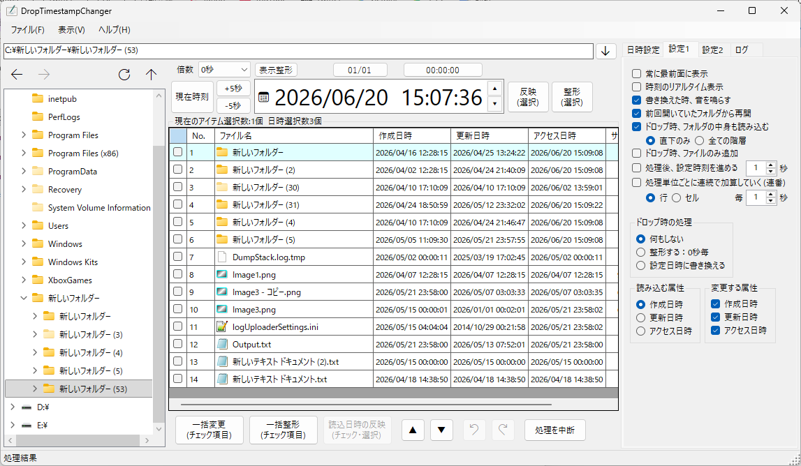
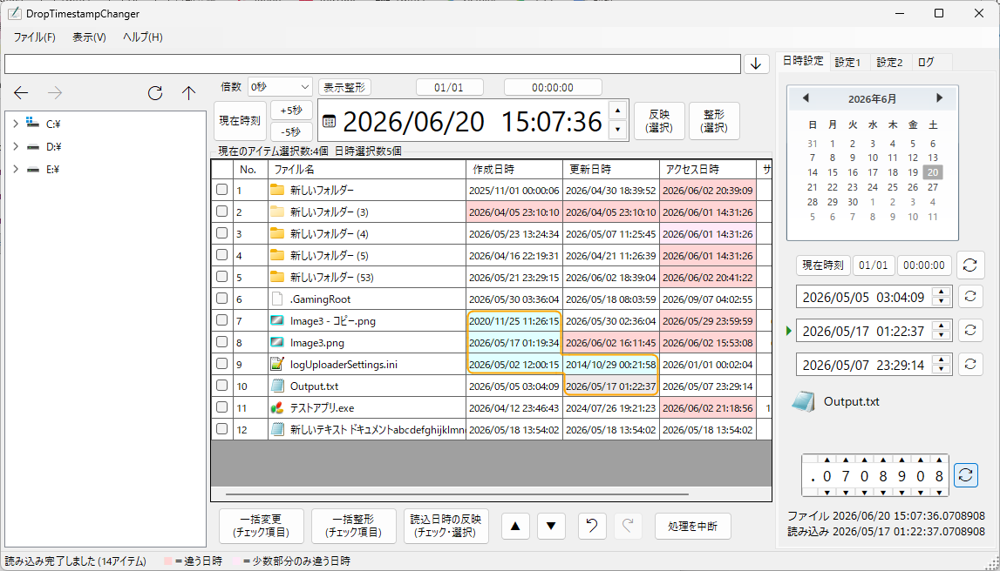
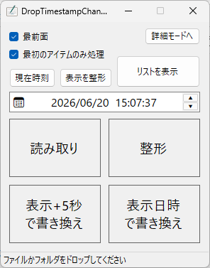

ファイル・フォルダの日時を手軽に変更・整形できるタイムスタンプエディタです。
ドラッグ＆ドロップや時刻の微調整などマウスでの操作性を重視して作っています。

エクスプローラー風の操作感でファイル階層を確認しながら操作できます。
ファイルやフォルダを階層欄にドロップするとそのアイテムのあるフォルダにジャンプします。リスト欄に直接ドロップするとそのファイルおよびフォルダをリストに表示します。
日時はセルごとに選択可能で、選択セル、チェック項目などで一括処理できます。ファイルごとまたは日時セルごとの連番処理にも対応しています。
時刻の小数部分を変更できます。
時刻の変更を巻き戻すことができます。
(小数部分の巻き戻しはできません)
リストに表示されている日時を保存したり読み込んだりできます。読み込んだ場合、現在の時刻と違っている日時を色で確認できます。
フォルダ階層ビュー、カレンダーパネル、少数調節など、リストを見ながら操作するモードです。

無駄な表示を省き、ドラッグ＆ドロップで素早く日時を書き換えることに特化したモードです。
